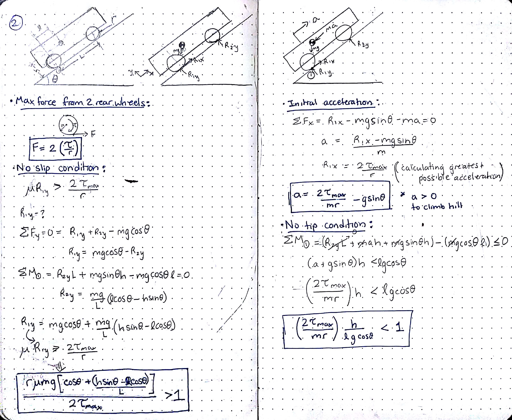
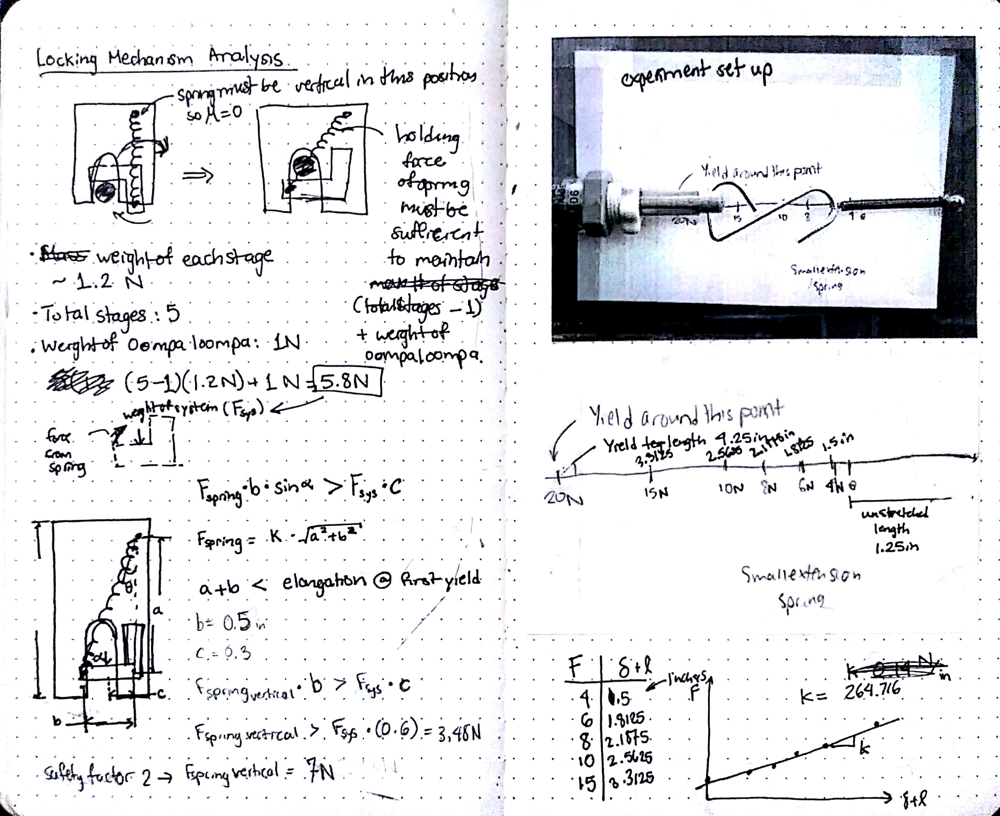
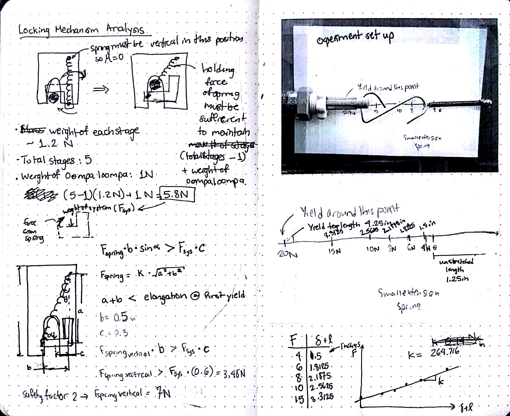
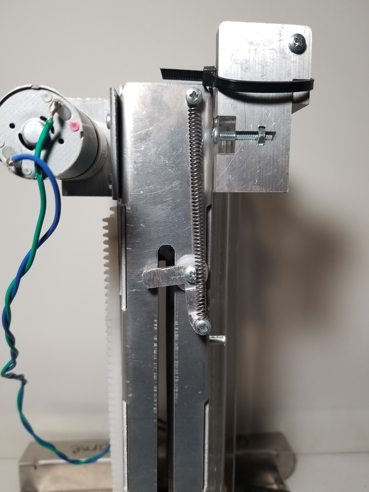
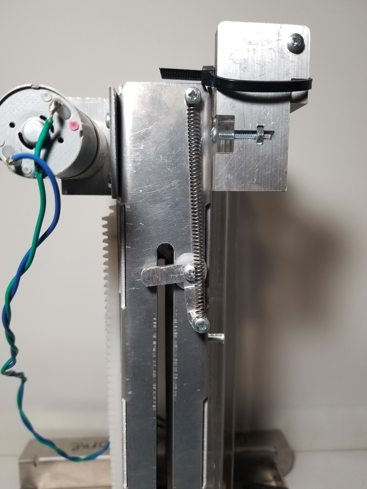

2.007 (Design and Manufacturing I) is an undergraduate design course required for the Mechanical Engineering Major. The course focuses on developing students' design skills and fabrication experience via a semester long project. We spend the semester designing and building our individual robots for the culminaiting class competition.
Throughout the semester we used lab notebooks to keep track of our design sketches and calculations. Below are a few pages from my lab notebook.
The coefficient of friction between the robot wheels the competition platform factors into other important calculations such vehicle slip and tip conditions up an incline(one of the challenges is to climb a hill). I used slip and tip conditions to optimize the position of the robot's center of mass.

Below are some of the preliminary concepts that i explored and my eventual decision to pursue a telescoping lift mechanism.

The critical functionality for this telescoping lift was its ability maintain relative extension even after traveling beyond the reach of the pinion gear. I explored spring-lever combination to create a locking mechanism.
 

 

I revisited the design of the locking mechanism(an over-center spring lock) to optimize for space, considering the constraints of the competition game board. I also worked on a second locking mechanism that regulated the timing of engagement for each of the 6 stages of the lift.

After designs were set there was still a a considerable amount time needed for fabrication and inevitable iteration. Fortunately, I was able to complete a competitive robot by the end of the term.


{kind=link}
{kind=link}
{kind=link}
{kind=link}
{kind=link}
{kind=link}
{kind=link}